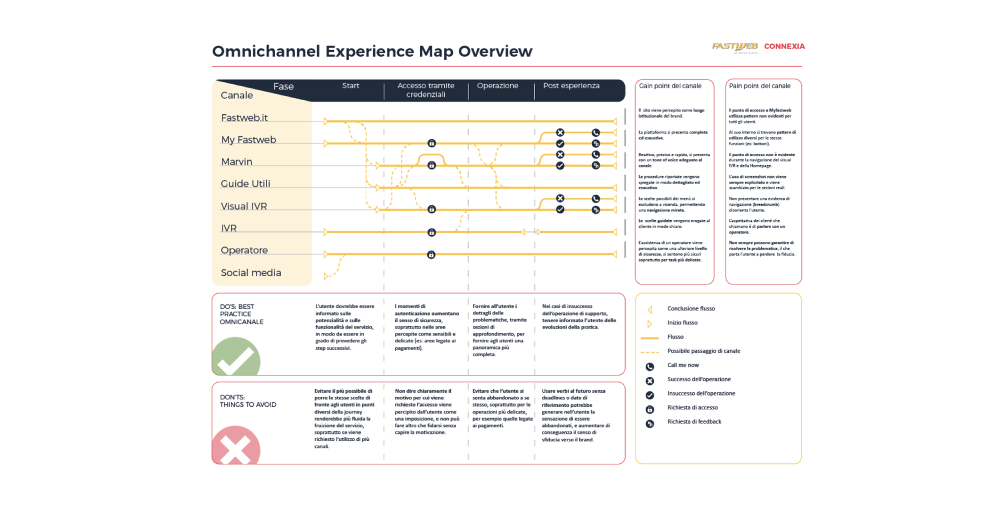

Innovation consulting: bringing AR, VR and other unconventional tech into clients' products and campaigns.Consulenza sull'innovazione: portare AR, VR e altre tecnologie non convenzionali in prodotti e campagne dei clienti.

Connexia is an advertising and media company. In its innovation division I worked on websites, e-commerce and digital products — and on campaigns built on mixed, augmented and virtual reality.Connexia è un'agenzia di comunicazione e media. Nella divisione innovazione lavoravo su siti, e-commerce e prodotti digitali — e su campagne basate su realtà mista, aumentata e virtuale.
In a team of graphic designers, innovation consultants and copywriters, I scouted emerging technologies and worked out how they could fit each client's project.In un team di grafici, innovation consultant e copywriter, cercavo tecnologie emergenti e capivo come inserirle nel progetto di ciascun cliente.
Completely different domains and no standard process — tackled with the same method.Settori completamente diversi e nessun processo standard — affrontati con lo stesso metodo.
Not every technology on the market fits what a project actually needs.Non ogni tecnologia sul mercato serve davvero a quello che il progetto richiede.
Workshops shaped on the project type, often without all the data at hand.Workshop costruiti sul tipo di progetto, spesso senza tutti i dati a disposizione.
Stakeholders at every level in the same project: detail and tone adapted each time.Stakeholder di ogni livello nello stesso progetto: dettaglio e tono adattati ogni volta.
A well-put question helps more than many answers.Una domanda ben posta aiuta più di tante risposte.
Stay curious beyond the client's scope — it widens the pool solutions come from.Resta curioso anche fuori dal perimetro del cliente — allarga il bacino da cui pescare le soluzioni.